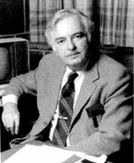
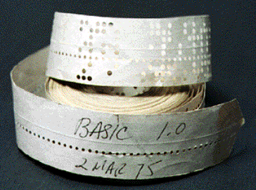
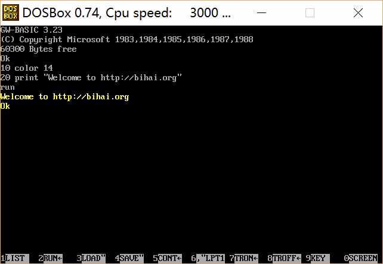
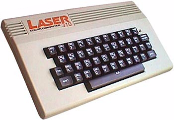
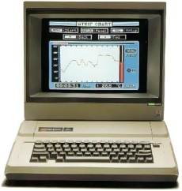

Free BASIC For All
——全民自由BASIC
[toc]
前 言
书名解读
Free:
adj. 免费的; 自由的; 免税的; 空闲的;
adv. 免费地; 自由地，无拘束地; 一帆风顺地;
vt. 释放; 免除; 使自由; 解救;BASIC:
abbr. Beginners All-purpose Symbolic Instruction Code
BASIC 语言（初学者通用指令码）For:
prep. 为，为了; 倾向于; 关于; 当作
conj. 因为，由于All:
adj. 全部的; 一切的; 各种的; 极度的，尽量的
pron. 全部; 一切; 每个人，每件东西; 全部情况
adv. 全部地; 完全地; 每个; 非常
n. 全体; [常作A-]整体; [常与my, your, his, her等连用]（某人）所有的一切
所以本书书名有5种含义：
Free BASIC, for us all，我们所有人的自由BASIC
Free BASIC, for all platforms，所有平台的自由BASIC
Free BASIC, for all. 为了所有人，所有平台，自由化BASIC
Free and all about BASIC. 关于BASIC的自由和所有的一切
Freedom is the basic for all. 自由乃万物基本
聪明的读者，请随便挑几种理解吧，或者您有更好的解读，请不吝赐教。
BASIC简史
1964年，美国达特茅斯大学的Thomas E. Kurtz(1928.2.22-)和John G. Kemeny (1926.5.31-1992.12.26，原籍匈牙利)，在Fortran II和ALGOL 60的基础上设计了一种新的计算机语言，命名为“Beginner’s All-purpose Symbolic Instruction Code”， 意为初学者通用符号指令代码，简称BASIC。这个简单易学的计算机程序设计语言当时只有17条语句，12个函数和3个命令，这就是BASIC始祖——Dartmouth BASIC。 第一个BASIC程序(实际是一个编译器)于当地时间1964年5月1日凌晨4点在一台GE-265 (IBM 704) 主机中成功运行，操作者是Mike Busch和John McGeachie。从此Kurtz和Kemeny作为BASIC语言之父永载史册。
|  | |
|---|---|
| Thomas E. Kurtz (1928.02.22-) | John G. Kemeny (1926.5.31-1992.12.26) |
BASIC语言本来是为校园的大学生们创造的高级语言，目的是使大学生容易使用计算机。虽然初期的BASIC语言功能弱、语句少，但由于BASIC比较容易学习，它很快从校园走向社会，成为初学者学习计算机程序设计的首选语言。
BASIC语言自诞生起就显示出了强大的生命力，各种衍生版本层出不穷。从APPLE-Ⅱ机上用的APPLE SOFT BASIC，到LASER- 310上用的MSBASIC，到IBM-PC及其兼容机上用的BASICA和GW-BASIC，再到MS-DOS上的MS BASIC、QuickBASIC 和VisualBasic 1.0， 直至Windows下的Visual Basic和Linux下的XBasic、YaBASIC等等，BASIC无处不在，甚至 许多电子游戏机(例如小霸王学习机)和微型电子词典(例如文曲星)中都实现了BASIC。如今BASIC语言在许多国家都作为一种计算机程序的教学语言和入门语言。谭浩强教授八十 年代所著《BASIC语言》一书，曾经多次再版，现在的发行量已经超过千万之巨，BASIC语言在中国有着大量拥趸，许多编程爱好者和专业人士也一直对它情有独钟。
早期的BASIC
-
Dartmouth BASIC和True BASIC
| |
| :—: |
|达特茅斯大学John Kemeny(左)和Thomas Kurtz(中)与学生研究程序 |
BASIC创始人J.
Kemeny和T. Kurtz 1964年在达特茅斯大学使用的BASIC语言被称为Dartmouth
BASIC， 这个BASIC祖先经过七次以上的版本更新，到1983年时演变成了True BASIC。最早的True BASIC可以同时在IBM
PC和Apple Macintosh计算机上运行，既能以解释方式执行，也能将代码编译成机器语言从而提高运算速度。True
BASIC是一种真正的结构化程序设计语言，到今天已经发展出了DOS 、MacOS 、Windows
、Unix和Linux等各种操作系统下运行的多种版本，并提供了声音、图像、数学运算、多任务等丰富的功能库。True
BASIC现在仍然是一种有强大生命力的语言，可以访问http://truebasic.com来进一步了解这种古老而正宗的语言。 -
Tiny BASIC
Li-Chen Wang博士(1935－，美籍华人，中文名字王理瑱)在1970年代中叶发表了第一个真正用于微处理器的BASIC版本，可以运行于任何Intel 8080及Zilog
Z80 微处理器上， 需要2KB内存，使用纸带输入。最早版本Palo Alto Tiny BASIC于1976年5月发表在著名计算机杂志[Dr. Dobb’
s](http://en.wikipedia.org/wiki/Dr.Dobb’s_Journal_of_Computer_Calisthenics&_
Orthodontia)。值得关注的是，这段汇编程序开头一段写着：@COPYLEFT ALL WRONGS RESERVED"All Wrongs Reserved"和"CopyLeft"
字样。
- 1;*************************************************
- 2;*
- 3;* TINY BASIC FOR INTEL 8080
- 4;* VERSION 1.0
- 5;* BY LI-CHEN WANG
- 6;* 10 JUNE, 1976
- 7;* @COPYLEFT
- 8;* ALL WRONGS RESERVED
- 9;*
- 10;*************************************************
Microsoft BASIC
BASIC语言虽然不是微软发明的，但谁也无法否认微软在BASIC的发展过程中做出的努力和取得的成就。1975年3月2日，微软公司发布了第一个真正意义上的产品
：用于MITS Altair 8800――第一台商用个人计算机的BASIC编译程序，从而开始了微软的传奇之旅。这个BASIC产品也为比尔・盖茨和保罗・艾伦的微软帝国奠定了基础，这也是比尔・盖茨对BASIC情有独钟的原因之一。 具有讽刺意味的是， 这个纸带上的著名产品本身也成了个人微型计算机历史上第一次大规模盗版的牺牲品——因为一份拷贝在正式发布前的一次展示会上丢失了，于是产生了大量复制品，这甚至影响到微软的产品策略，导致BASIC最终被免费随MS-DOS提供给用户。 这也是微软历史上第一次源代码泄漏事件。
 |
 |
|---|---|
| 最初的微软公司，摄于1978年12月 左下角是比尔・盖茨，右下角是保罗・艾伦 | 纸带上的MS BASIC 1.0 |
Basic 解释器：
IBM发布的第一台PC机的ROM中包含了一个BASIC，而且它使用的由微软公司编写的PC- DOS里包含了一个扩展的磁盘版的BASIC，名为BASICA(高级BASIC)，而微软自己的MS-DOS则包含了一个类似的版本，称为GW-BASIC 。BASICA和GW-BASIC的区别在于BASIC 需要计算机内建ROM BASIC的支持。使用Basica/MS Basic/IBM Basic的IBM-PC如果没有启动软盘，ROM BASIC就会自动运行。
BASICA和GW-BASIC都是解释器，解释器相对容易实现而且不需要为结果代码保留内存，但与编译后的程序相比速度较慢。
- 110 color 14
- 220 print "Welcome to http://bihai.org"
|  |
|---|
| GW BASIC 3.23 运行实例 |
|  |  |
|---|---|
| Laser 310，香港制造，1984年开始生产，CPU: Zilog Z80 A，速度3.54 MHz，内存16-64KB，带电视和视频接口，操作系统MS BASIC，1985年价格为257美元。 | Apple II，美国制造，1983年开始生产，CPU: MOS 65c02，速度1.02 MHz，内存64KB，操作系统DOS 3.3 or ProDOS，1298美元。 |